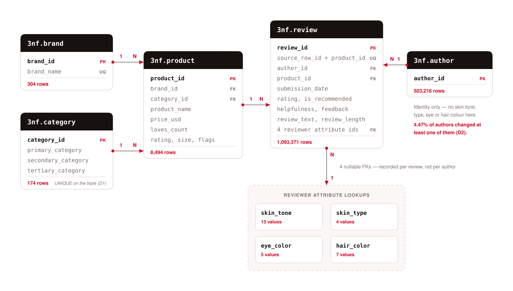
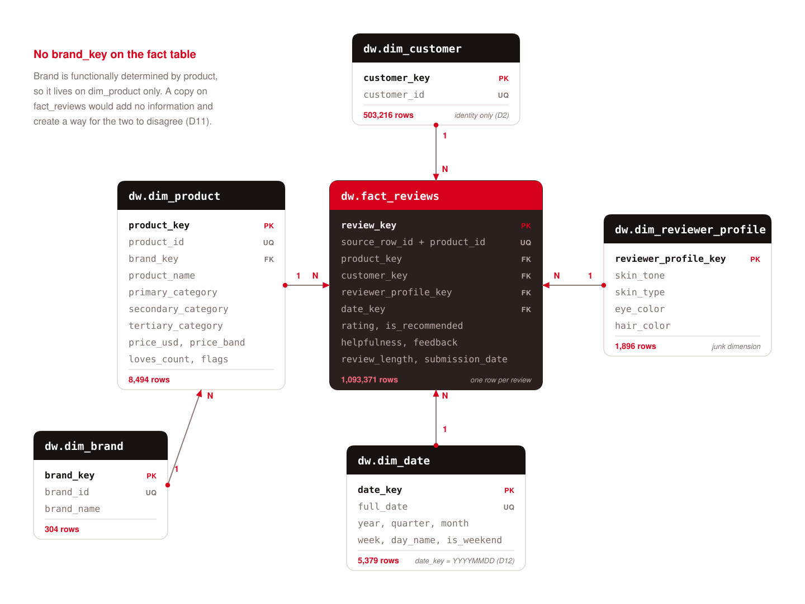
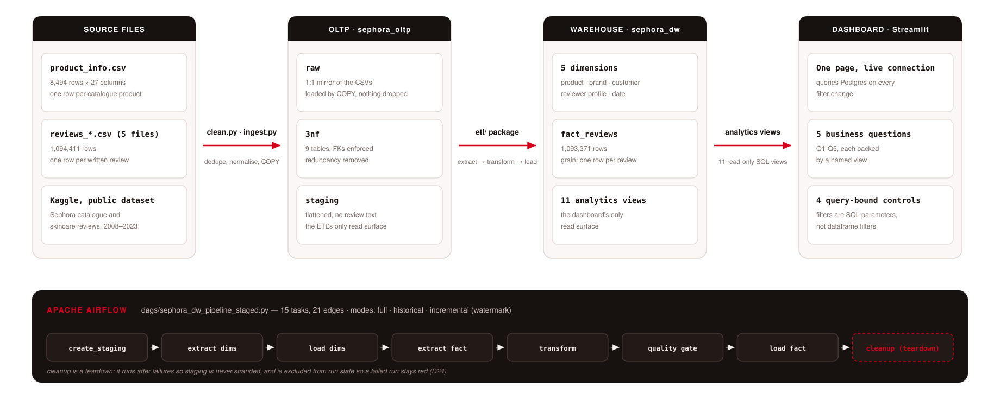
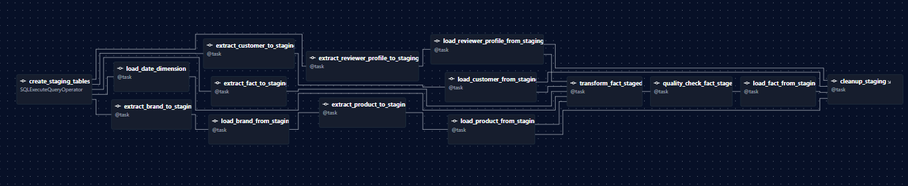
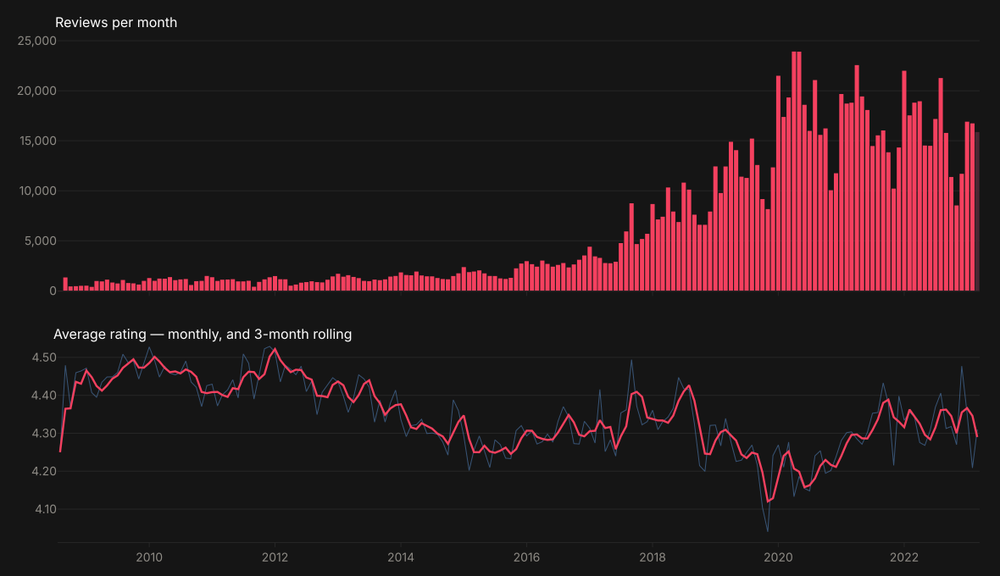
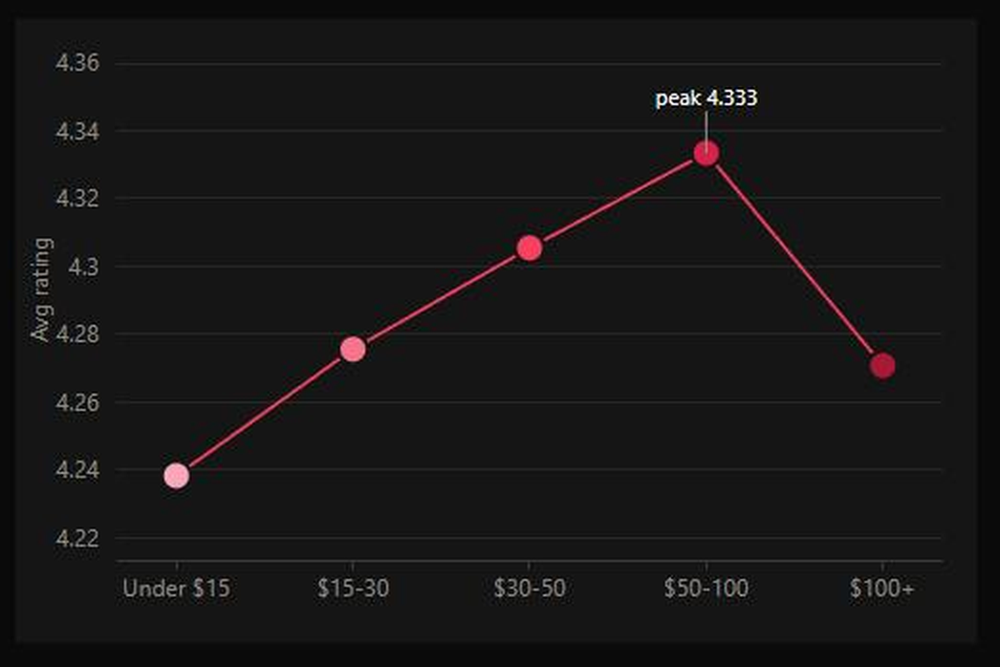
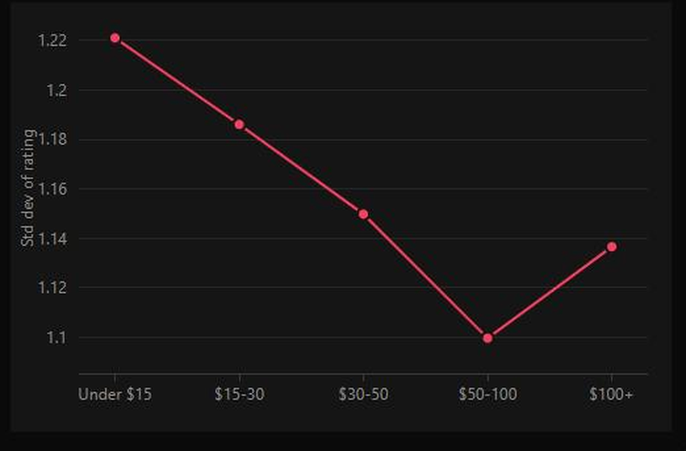

Sephora
Skincare Reviews
An end-to-end analytics pipeline — 1.09 million reviews from raw CSV, through a normalized OLTP database and a star-schema warehouse, orchestrated by Airflow and read by a live dashboard.
There is no good way to compare what actually works
You can read one product page at a time
1.09 million reviews across 8,494 products sit in flat files. Nothing lets you rank a brand against its category, or a category against the rest of the catalogue.
A star rating without context is not an answer
4.3 stars means nothing until you can hold price band, skin type and review volume steady. A product with 12 reviews and one with 130,000 sit side by side, weighted the same.
“Wanted” and “liked” are different signals
loves_count is recorded before purchase and the
rating after it. Nothing separates them, so the most marketed
product reads as the best product.
A warehouse where every one of those comparisons is a single query, and a dashboard where the filters are the query — not a view applied after the fact.
The same five questions serve all four: who rates best, what is overhyped, whether price predicts satisfaction, whether skin profile changes the answer, and how any of it moves over time.
Sephora products and skincare reviews
A public Kaggle dataset: one product catalogue and five review files, covering fifteen years of reviews from August 2008 to March 2023.
across 5 CSV files
27 columns each
1:1 with brand_id
authors
(not a hierarchy)
1,040 duplicate reviews on (author, product, date) — but 5,525 on (author, product), so the difference is legitimate re-reviews.
Two values that were not values: Grey and gray are one
colour, 4,859 rows; notSureST is “not sure”, not a skin tone.
Nulls that are undefined, not missing: helpfulness is null exactly
when feedback count is 0 — so it is never imputed.
A usable idempotency key: (source_row_id, product_id) collides
0 times across all five files, so re-running a load cannot duplicate a row.
reviews carried forward — 1,040 duplicates removed, 1,030,753 cells whitespace-trimmed, 0 unparseable dates, and not one column dropped: every source column still reaches the raw layer.
A 3NF model, in three deliberate layers

raw → 3nf → staging
raw mirrors the CSVs 1:1 for traceability, 3nf
enforces the relationships, staging flattens the validated
entities so the ETL reads one predictable shape.
Two transitive dependencies removed
brand_name depends on brand_id, not on the product;
the category triple likewise. Both move off product and are
reached by foreign key — that is the 3NF change.
Reviewer attributes live on the review
Skin tone, skin type, eye and hair colour were recorded per
review, so they sit on review as lookups. author holds
identity and nothing else.
Zero row gap, end to end
1,093,371 reviews in raw, in 3nf, and in staging. All six integrity checks return 0.
One fact, five dimensions, one grain

dim_customer carries identity only
22,503 authors (4.47%) recorded more than one profile across their reviews, covering 149,788 reviews. A profile held on a per-author dimension would mis-tag one review in seven, silently.
dim_reviewer_profile is a junk dimension
The four correlated, low-cardinality attributes bundle into 1,896 rows at review grain — where they were actually recorded.
Category flattened, brand snowflaked
All three category levels are plain columns on
dim_product, because the dashboard groups on them constantly.
Brand stays a table: “rating by brand” is a business question in
its own right.
Idempotent by construction
Every load targets UNIQUE(source_row_id, product_id) with
ON CONFLICT DO NOTHING. Re-running a full load offered
1,043,868 rows and inserted 0.
From raw CSV to a live dashboard

Two physical databases
sephora_oltp and sephora_dw are separate, so the normalized model and the dimensional one cannot quietly become one thing.
Views are the read surface
The dashboard never reads a table. 11 SQL views sit between it and the warehouse, so a definition changes in one place.
Three named load modes
full, historical and watermark-driven incremental share one implementation and one set of quality checks.
Nothing is dropped silently
Every dropped row is counted against a named reason; an unexplained gap raises ReconciliationError and stops the run.
15 tasks, and one that must not report success

Dimensions in parallel, the fact path staged
Date, brand, customer and reviewer-profile load concurrently; product waits on brand for its foreign key. The fact is then handled in four separate tasks — extract, transform, quality gate, load — so a failure names itself instead of pointing at one opaque step.
Cleanup is a teardown, not a leaf
Cleanup runs after failures so staging is never stranded — which had made it the only leaf, and Airflow reads run state from leaves, so a failed extract reported a green run over an empty warehouse. Marking it a teardown excludes it from run state and restores load_fact as the leaf.
Historical run green in 134s; incremental restored 49,503 rows in 22s. Then a failure was injected: 3 tasks upstream-failed, cleanup went green, and the run went red — which also exposed a race that had stranded 513,606 staging rows.
Four choices worth defending
Twenty-four decisions are logged in docs/09_decision_log.md, each with the measurement behind it. These four changed the shape of the project.
A junk dimension, not a profile on the customer
The obvious design hangs skin tone and type off dim_customer. Measured: 4.47% of authors changed at least one attribute, across 13.69% of reviews — so that design mis-tags one review in seven, with no constraint violated and nothing downstream to notice. Cost: one extra join.
Streamlit instead of Power BI
The dashboard lives in the repository: versioned, diffable, smoke-tested in CI, reproducible with one command. The cost is real and worth stating plainly — no DAX and no Power BI model are demonstrated. That trade is logged, not hidden.
No brand_key on the fact table
Brand is functionally determined by product, so a copy on a 1.09M-row fact adds no information and creates a way for the two to disagree after a bad load. Brand analysis joins through dim_product. Redundancy is only worth it when it buys something.
Reconcile every row; gate, don’t fix
Every dropped row is counted against a named reason, zeros included, and an unexplained gap raises. The quality layer only ever raises or warns — it never repairs data, because a check that quietly fixes its own finding is a check nobody can audit.
Fifteen years, and the dip that explains itself

Growth, then a plateau
Volume climbs for twelve years to 23,917 reviews in April 2020, then settles rather than falling.
The 2020 dip is real, and small
Rating bottoms at 4.12 on the rolling line and recovers to 4.34 by 2022. Four hundredths of a star — worth showing, not worth a story.
The last bar is dimmed on purpose
March 2023 ends on the 21st. Drawn like the rest it reads as a collapse in demand, which would be the chart lying about a partial month.
Price does not predict satisfaction — not linearly
Average rating by price band

Rating spread — lower means more agreement

Both charts are live reads. Every filter on the dashboard is a SQL parameter, not a dataframe filter — a client-side filter would look identical on screen and be a different claim.
An inverted U, not a straight line
Ratings climb from 4.238 under $15 to 4.334 at $50–100, then fall back to 4.271 above $100.
Agreement peaks in the same band
Rating spread narrows to 1.100 at $50–100 and widens again above it. $50–100 is the sweet spot on both measures — best rated and most agreed upon.
Lines, not bars — on purpose
The whole spread is a tenth of a star, so the axis must be truncated. A truncated axis under bars misleads, because bar length is read from zero.